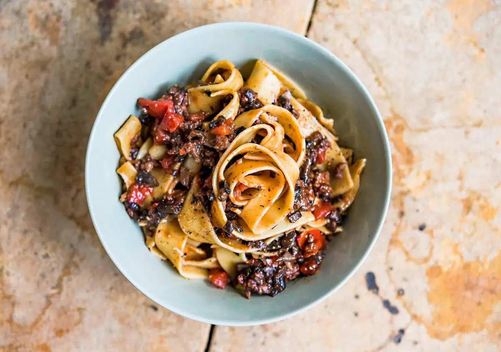

Italian Sausage and Mushroom Ragu
- Total time45 mins
- Serves4
- Ingredients11
- Steps3

Ingredients
- 2 tablespoons salted butter
- 5 medium garlic cloves, finely chopped
- 1 pound portobello mushrooms, stems and gills removed, caps finely chopped
- 2 large shallots, halved and thinly sliced
- 1 pound bulk sweet Italian sausage
- 1 cup dry wed wine
- 1 1/2 cups low-sodium chicken broth
- 1/2 teaspoon cinnamon
- Kosher salt and ground black pepper
- 14 1/2-ounce can crushed tomatoes
- 12 ounces dried pappardelle or tagliatelle pasta
Directions
- In a 12-inch skillet over medium, heat the butter and garlic until the butter has melted and the mixture has begun to sizzle. Add the mushrooms and shallots and cook, stirring, until the mushrooms have released their liquid and the shallots have softened, about 5 minutes. Add the sausage and cook, stirring and breaking the meat into small pieces, until no longer pink, 8 to 10 minutes. Discard any accumulated fat.
- Increase to medium-high and add the wine. Bring to a boil and cook, stirring, until the wine has almost completely evaporated, about 5 minutes. Stir in the broth, cinnamon and ¾ teaspoon pepper. Continue to simmer until the broth has reduced by about half, 5 to 6 minutes. Reduce to medium, stir in the tomatoes and simmer until slightly thickened, about 5 minutes. Taste and season with salt and pepper. Set aside, covered.
- While the sauce simmers, in a large pot bring 4 quarts of water to a boil. Add the pasta and 2 tablespoons salt and cook until the pasta is al dente. Reserve ½ cup of the cooking water, drain the pasta and return it to the pot. Add the sauce and toss to coat. If needed, toss in a few tablespoons of the reserved cooking water to thin the sauce to coat the pasta.
Recipe credit: 177milkstreet.com and Milk Street Tuesday Nights by Cristopher Kimball